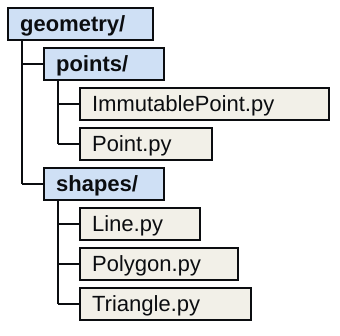
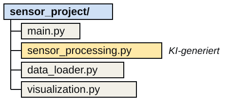
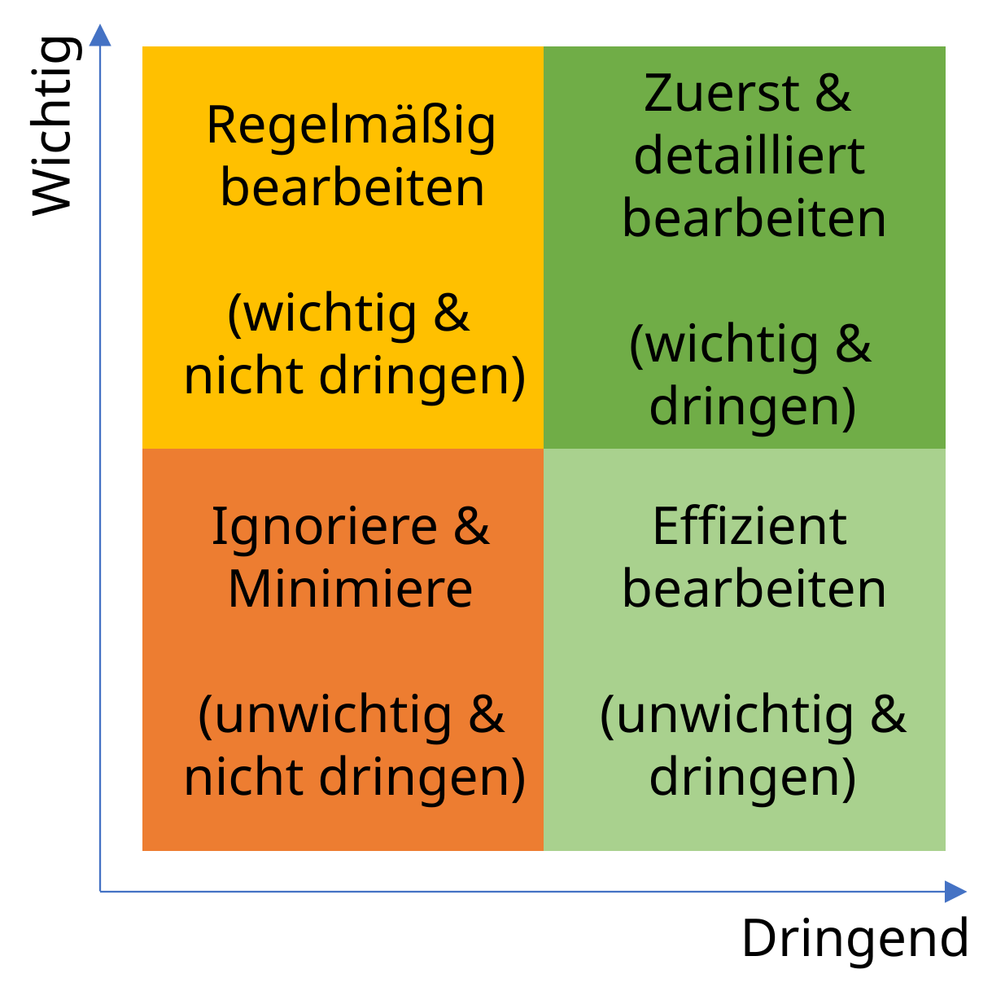

Modularisierung
Joern Ploennigs · AI4SC
Midjourney: Modular Blocks, ref. Piet Mondrian
Projektstruktur so aufbauen, dass KI-Output landet
Ein Modul ist eine .py-Datei, ein Package ein Verzeichnis aus Modulen. Eine Datei pro
- Klasse (bei Klassendefinitionen)
- Thema (z.B. Mathematik-Funktionen)
- Aufgabenbereich (z.B. Laden vs. Verarbeitung)
Modulgrenzen sind Architekturentscheidungen. Klassen in Modulen: → 06b_Objects

Grundlagen der Projektstruktur
Module als KI-Generierungseinheiten
KI liefert Code auf Modulebene:
- Ein Prompt → eine
.py-Datei - Klares öffentliches Interface: die Funktionen und Klassen, die andere Module nutzen
- Interne Helfer bleiben privat (
_name) - Imports nur, was das Modul braucht
Modulgrenze = Architekturgrenze
Was gehört in das Modul? Was wird zwischen Modulen ausgetauscht? Passt die generierte Datei an diese Stelle im Projekt?

Demo: Prompt für ein Modul
Schritt 1: Anforderung formulieren
„Schreibe
sensor_processing.pymit einer Funktionclean_readings(values: list[float]) -> list[float], die Ausreißer entfernt (Werte außerhalb 2σ).“
list[float] ist eine Typangabe: Die Funktion erwartet eine Liste aus Fließkommazahlen und liefert wieder eine solche Liste.
Schritt 2: KI generiert
# sensor_processing.py [KI-generiert]
import statistics
def clean_readings(values: list[float]) -> list[float]:
if len(values) < 2:
return values
mean = statistics.mean(values)
std = statistics.stdev(values)
return [v for v in values if abs(v - mean) <= 2 * std]
def _is_outlier(value: float, mean: float, std: float) -> bool:
return abs(value - mean) > 2 * stdDemo: Generiertes Modul prüfen
Interface und Struktur
- Stimmen Funktionsname und Typen mit dem Prompt überein? Ja.
- Ist
_is_outlierprivat markiert? Ja, wird aber vonclean_readingsnie aufgerufen. - Importiert das Modul nur, was es braucht? Ja, nur
statistics.
Verhalten
Mit der Stichproben-Standardabweichung kann bei n ≤ 5 kein Wert weiter als 2σ vom Mittelwert entfernt sein (höchstens 1,79σ bei n = 5).
clean_readings([20.0, 20.1, 19.9, 20.0, 99.0]) gibt alle fünf Werte zurück, auch den Ausreißer 99.0.
Prüffragen für ein KI-Modul
Ist das öffentliche Interface das, was Sie spezifiziert haben? Sind interne Helfer mit _ privat? Importiert das Modul nur, was es braucht? Die Modulstruktur gehört auch zur Checkliste in 08b_CodeReview.
Die main()-Funktion als Startpunkt
Woher weiß Python, was ausgeführt werden soll?
- Eine Datei ist das Zentrum des Projekts und enthält
main() main()gibt den Startpunkt an und existiert in fast jeder Programmiersprache- Drei Ausführungsarten: als Skript, importiert in die Konsole, importiert in eine Datei
- Nur beim Skriptstart soll
main()laufen: die Variable__name__entscheidet
Best Practice für main()-Funktion
Vor main() erlaubt
- Funktionsdefinitionen
- Klassendefinitionen
Vor main() vermeiden
- Globale Variablen
- Funktionsaufrufe (Nebeneffekte)
Vorteil dieser Struktur
Der Programmfluss bleibt übersichtlich, das Programm ist einfach zu ändern und lässt sich besser wiederverwenden.
Programmfluss über mehrere Dateien: import
- Jede Sprache lädt externen Code: in Python
import, in C/C++#include, in JavaScriptrequire - Eine
.py-Datei enthältmain(), alle anderen nicht (oder sie schützen es mit__name__) importführt den kompletten Code der Datei aus, auch Variablen und Funktionsaufrufe- Variablen, Funktionen und Klassen landen im Objekt
external_file
Modul, Namespace, Package
- Modul: eine importierte
.py-Datei, z.B.ImmutablePoint.py - Namespace: das entstehende Objekt (Typ
module) - Package: ein Verzeichnis mit Modulen und Untermodulen, z.B.
geometry
Python sucht Module in sys.path: im Projektverzeichnis und in den installierten Paketen.
Standardbibliothek und PyPI
Standardbibliothek
Mit Python mitgeliefert, sofort per import nutzbar: os, json, math, urllib, logging
Bei KI-generiertem Code prüfen
Ist jeder Import in Python enthalten oder eine Abhängigkeit, die erst installiert und dokumentiert werden muss?
Packages auf PyPI
- Viele Probleme lösen sich durch das Kombinieren vorhandener Packages
- Die offizielle Anlaufstelle ist der Python Package Index (PyPI)
- Installation meist mit einem Befehl:
pip installoderuv add
Lesson Learned
Wie priorisiert man richtig?
Lesson Learned - Priorisierung
- Beim Eisenhower-Schema unterteilt man in dringend und wichtig
- Man bearbeitet zuerst die dringenden, wichtigen

Questions

Artificial
Intelligence